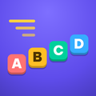

Umbrette
调暗一切，只留下你正在工作的窗口。
功能
Umbrette 常驻菜单栏，在屏幕上除你正在工作的窗口之外的所有内容上覆盖一层柔和的遮罩，让这个窗口凸显出来，其余部分退到后面：适合专注工作、整洁的截屏和演示，以及轻松的夜晚。点按图标即可调暗；再点按一次即可恢复整个屏幕。
- 调暗或模糊，深度由你设定，色调可选中性、暖色、冷色或你自己的颜色。
- 整个 App 或仅最前面窗口保持明亮；当你切换 App 和窗口时，光亮会以平滑的渐变跟随你。
- 为 App 设定规则：视频播放器在前台时从不调暗，让几个 App 一起保持明亮，或让小工具获得焦点时不移动光亮。
- 夜晚：按计划调暗，遮罩会随着夜色渐深而变暖。
- 多台显示器：将其他显示器整体调暗，或让每台显示器各自的最前面窗口保持明亮。
- 为 Mac 打造：专注模式过滤条件、快捷指令操作、可选的键盘快捷键，以及登录时打开。
需要 macOS 14 Sonoma 或更高版本。
一段话说清隐私
Umbrette 不请求任何权限，既不需要辅助功能，也不需要屏幕录制。它只读取屏幕上窗口的位置和大小，这是 macOS 提供给每个 App 的信息，从不读取窗口的标题或内容。它没有网络访问，没有账户，也没有跟踪。完整的隐私政策对此有更详细的说明。
同一开发者的更多应用
小巧的应用，每一款都专心做好一件事。无需账户，没有广告，也没有一款会追踪你。
 Statuette在菜单栏查看 CPU、内存、磁盘和网络。Mac
Statuette在菜单栏查看 CPU、内存、磁盘和网络。Mac Tockette从菜单栏轻轻一拖，计时器就开始了。Mac
Tockette从菜单栏轻轻一拖，计时器就开始了。Mac Zonette你关心的每个时区，点一下就能看到。MaciPhone 和 iPadAndroid
Zonette你关心的每个时区，点一下就能看到。MaciPhone 和 iPadAndroid Lunette月亮和太阳，一目了然。MaciPhone 和 iPadAndroid
Lunette月亮和太阳，一目了然。MaciPhone 和 iPadAndroid Lunarette四种传统的农历。MaciPhone 和 iPadAndroid
Lunarette四种传统的农历。MaciPhone 和 iPadAndroid Pausette为眼睛和腰背安排温和的休息。Mac
Pausette为眼睛和腰背安排温和的休息。Mac
Poisette坐直身子，由你戴着的 AirPods 提醒。MaciPhone 和 iPad Hushette宁静的环境音，从不循环重复。MaciPhone 和 iPadAndroid
Hushette宁静的环境音，从不循环重复。MaciPhone 和 iPadAndroid- Tapsody打字时发出机械键盘的声音。Mac
 Thrumline你的心率，实时显示在菜单栏。Mac
Thrumline你的心率，实时显示在菜单栏。Mac Nightjar让 Mac 保持唤醒。实实在在。Mac
Nightjar让 Mac 保持唤醒。实实在在。Mac Prompette就在摄像头下方的提词器。MaciPhone 和 iPadAndroid
Prompette就在摄像头下方的提词器。MaciPhone 和 iPadAndroid Tallette为你的算账准备的一卷纸带。MaciPhone 和 iPadAndroid
Tallette为你的算账准备的一卷纸带。MaciPhone 和 iPadAndroid Probette媒体文件的所有技术细节，用通俗的话说清楚。MaciPhone 和 iPadAndroid
Probette媒体文件的所有技术细节，用通俗的话说清楚。MaciPhone 和 iPadAndroid Bindette把音频文件合成一本像样的有声书。MaciPhone 和 iPadAndroid
Bindette把音频文件合成一本像样的有声书。MaciPhone 和 iPadAndroid Lettrette按发送时的原样打开 winmail.dat 和 .msg 文件。MaciPhone 和 iPad
Lettrette按发送时的原样打开 winmail.dat 和 .msg 文件。MaciPhone 和 iPad
Nhanh Tay把四个答案排好顺序。要快。iPhone 和 iPadAndroid Pinette让便签一直在你眼前。MaciPhone 和 iPadAndroid
Pinette让便签一直在你眼前。MaciPhone 和 iPadAndroid Usagette在菜单栏查看 Claude 用量上限。Mac
Usagette在菜单栏查看 Claude 用量上限。Mac